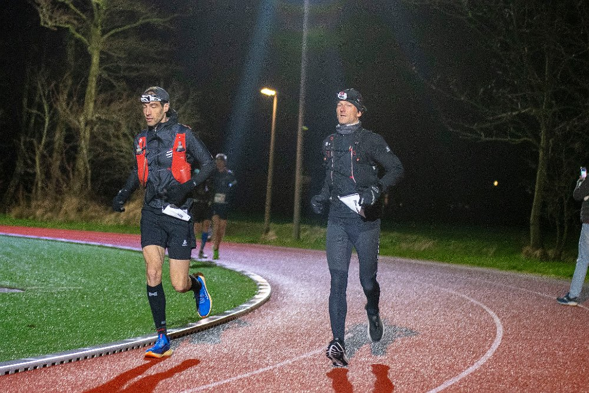
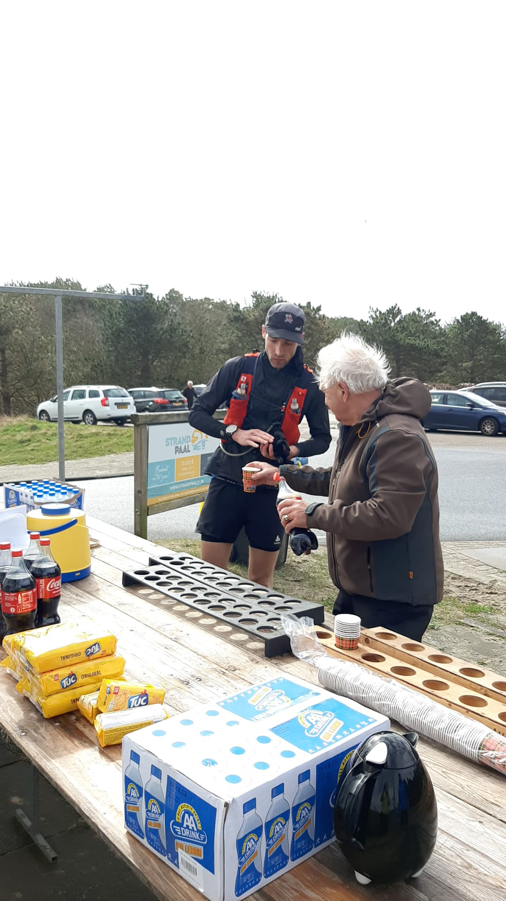
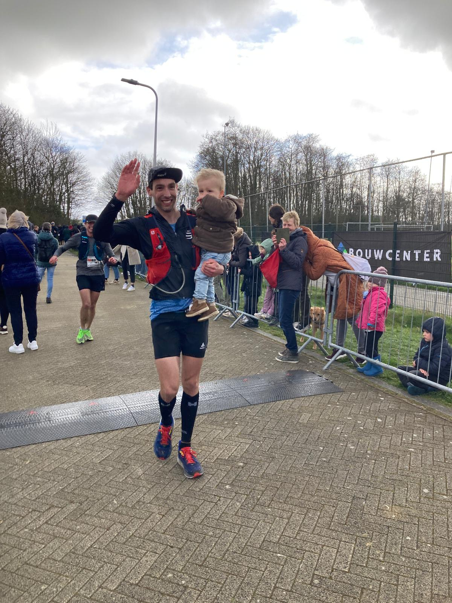
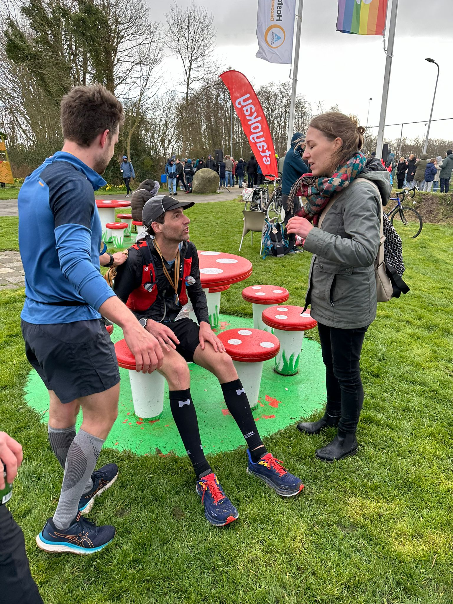

Zondag 24 maart 2024 04.35 in de ochtend, het startschot van de 120 van Texel op de atletiekbaan van den Burg. De weersverwachtingen zijn onheilspellend, windkracht 7 WNW, onvoorspelbare stortbuien en mogelijk hagel, en een gevoelstemperatuur van rond het vriespunt. Het begin van een lange dag. Maar eerst hoe we hier terecht zijn gekomen.
Hidde had het idee om met een groepje naar Texel te gaan om daar de estafette te lopen. Ik wilde ook wel mee, maar dan wel voor de solo. En liever nog voor de 120km. Dus schreef ik half september een mail naar Henri Thunnissen met het verzoek voor een wildcard. Ik heb nog nooit een verharde ultra gelopen en daarmee ook niet aan de kwalificatieesien voldaan. Echter, was de combinatie van een goede 100 mijl race en een relatief snelle 80km bij de Sallandtrail voldoende voor een wildcard, dus na de inschrijving kon de voorbereiding beginnen.
Trainen voor zo’n lange ultra naast een gezin met een jong kindje en een baan is best een uitdaging![^1] In de voorbereiding heb ik een paar races gelopen. De lange Devil’s trail van Utrecht en Nijmegen, Olne-Spa-Olne (70km) in November, de Otterloo Trailrun in januari en de Driebergenloop halve marathon begin maart. De resultaten waren wisselend, Utrecht ging goed, Nijmegen ging goed (maar liep ik verkeerd), OSO was pittig door de hoogtemeters en maakte ik een foutje met mijn voeding (maar de helft van het poeder in de bidon gedaan…), en Otterlo en Driebergen gingen weer goed. Met de snelheid zat het wel goed, de vraag was meer hoe het met de afstand zou gaan. Door naar werk hard te lopen lukte het om aardig wat kilometers te maken, tegen de 100km per week. Maar aan echt lange trainingen ontbrak het een beetje. Twee keer ongeveer een marathon afstand en één keer 65km (met wat marathonblokken van Stephan tussendoor). Die gingen allemaal goed, dus ik had er wel vertrouwen in dat het met de juiste voeding goed moest komen.
Met een groepje hadden we een mooi huisje gehuurd nabij de Koog. Op vrijdag 22 maart namen we met een volbepakte auto (kind, hond, spullen en boodschappen voor een heel huis voor een weekend) de boot naar Texel. De nacht van vrijdag op zaterdag was wat minder, ik werd vaak wakker. Vast een beetje door de zenuwen en een beetje door het slapen op een nieuwe plek. Wel jammer, want dit was nou net een nacht om een beetje extra bij te slapen. Zaterdag zijn we met zijn allen naar paal 9 gegaan voor een wandeling. Ik had nog even het idee om een parcoursverkenning te doen bij de Hors, maar door de harde wind en soms regen hebben we dat maar overgeslagen. Ook de wandeling was wat ingekort door de wind, maar de warme chocomel in het strandpaviljoen smaakte heerlijk! ’s Middags nog even rondkijken bij de Stayokay en shirtjes ophalen en daarna optijd naar huis voor het eten en rond 20.30 te bed! Ondanks dat ik nog vrij moe was van de nacht tevoren lukte het niet direct de slaap te vatten. Gelukkig sliep ik wel redelijk, al werd ik ook weer ruim voor de wekker van 02.30 wakker. Goed, de slaap tot dusver zat niet mee, maar ik voel mij verder prima. Samen met Tera, die zo lief was om even mee op te staan, aan het ontbijt. Na afronding van alle ochtendrituelen is het dan om 03.50 tijd om naar de start te gaan. Iets te laat zoals gewoonlijk, maar de wind staat in de rug dus heel lang is het niet fietsen.
0 - 25km: naar de vuurtoren van de Cocksdorp
Om 04.30 lopen we naar buiten vanuit de kantine van de atletiekbaan. Binnen heb ik kort gesproken met een aantal jongens met een drone, zij volgen vandaag Jeroen van Veen, één van de deelnemers en tevens sponsorloper die geld inzamelt voor het Prinses Maxima Centrum. De banaan is op en de sportdrank ook dus het hele ritueel zit erop en ik ben klaar voor de start. Om 04.35 dan het startschot, ik start in korte broek, met mijn (nieuwe) enkel tubes, t-shirt (merino), regenjack, waterdichte handschoenen die ik woensdagavond nog in allerijl online besteld heb, en petje. Wat aan te trekken was nog een flinke vraag, want met dit weer is het moeilijk inschatten wat verstandig is. Tera heb ik een tas gegeven met droge shirts, sokken etc. Voor nu hoop ik vooral dat mijn kern warm genoeg blijft. Gelukkig is het tot dusver droog.
We beginnen met bijna vier rondjes op de atletiekbaan. Best bijzonder om half vijf ’s ochtends. Ik tel de lopers voor mij, dat zijn er vijf. Naast mij loopt nog Werner Roels, veelvoudig deelnemer op Texel en tevens mijn mede-pacer bij de marathon van Rotterdam afgelopen jaar. Zodra we de atletiekbaan afdraaien gaan de hoofdlampjes aan en komen alle fietsbegeleiders ook het parcours op. Zover ik zie heeft iedereen in mijn buurt een fietsbegeleider bij. Deze mogen, behalve de stukken over het strand, de route meefietsen. Zelf loop ik zonder fietsbegeleider. Ik was bang dat ik mij teveel verantwoordelijk zou voelen over of het wel goed zou gaan met de fietser (zeker als het zulk slecht weer is) en daarnaast vind ik het ook niet erg om met een vestje te lopen. Hierin zit in principe genoeg voor de eerste 60km (starten met 2.5l sportdrank en een stuk of 14 gels). Bovendien is dit vestje een stuk comfortabeler dan mijn rugzak met laptop voor woon/werkverkeer loopjes.

Het eerste stuk op de Schansweg waait het in de rug. Het tempo ligt rond de 4’45”/km tot 5’/km, prima precies wat ik mij voorgenomen had. De vijf lampjes voor mij zie ik in rap tempo aan de horizon verdwijnen. Na ruim vijf kilometer is het linksaf en beginnen we aan de toch noordwaarts richting de Cocksdorp. Ondanks dat dit mijn eerste Zestig van Texel is ken ik de omgeving wel. Langs dit stuk kust heb ik ooit mijn eerste triathlon gedaan, de kwart triathlon van Texel in 2014, toen was het ook stormachtig! Daarnaast ook al vaker het eiland met de fiets verkend. Ik had verwacht dat de wind op dit stuk al schuin tegen zou staan, maar dat valt mij eigenlijk alles mee. Ondanks het routekaartje op mijn horloge is het bij de haven van Oudeschild toch even zoeken, gelukkig loop ik nog steeds naast Werner en zijn fietsbegeleider geeft ruim optijd aanwijzigingen. Toch wel handig!
Na Oudeschild lopen we buitensdijks verder totdat we de polder Zandkes verlaten, daar lopen we nog even een klein stukje verkeerd (afslag te vroeg genomen) en gaan we binnensdijks verder. Na een kleine twintig kilometer halen we Mascha Rondhuis bij, de eerste vrouw in de race. Zij sluit bij ons aan, dus gedrieen lopen we verder. Als snel gaan we een kluft op en lopen we buitensdijks verder. En hier begint het, een hevige hagelbui overvalt ons. De wind is inmiddels ook wat minder gunstig en staat nu soms wel schuin tot iets tegen. Na de regen moet ik mijn benen even losschudden, knieen waren toch een beetje koud geworden. De handschoenen waren wel een hele goede keuze! Met wisselvallig weer lopen we verder, richting de vuurtoren. Ik voel mij nog prima en na ongeveer 25km gaan we de duinen in en begint de tocht zuidwaarts richting de boot.
25 - 60km: naar de boot
In het duingebied gaat het tempo in ons groepje iets omhoog, net onder de 4’40”/km. Dat hoeft van mij niet perse, maar in een groepje lopen is toch prettiger. Even later haakt Mascha af en lopen we weer met twee. Bij het 30km punt is het linksaf de duin op en dan de Slutfervallei in. Het is inmiddels helemaal ligt en de hoofdlamp kan weg. Ik heb mij ingesteld op het 38km punt, want daar staat Tera voor het eerst. Eerst nog door de Sluftervallei heen en dat valt niet mee. Het is hier en daar flink glibberen op de natte grindpaden en mijn schoenen hebben zo goed als geen profiel. Gelukkig lukt het om overeind te blijven.
Aan het einde door het poortje en rechtsaf richting het strand bij paal 21. Ik zet vast mijn bril op, want ik heb gisteren gemerkt hoe erg je op de strandopgang gezandstraalt kan worden. Op de parkeerplaats staan Tera, Maik, Merel en Elias. Fijn! Maik pakt mijn lampje aan en we gaan door het strand op.
Op het eerste stuk strand halen we op een gegeven moment Bram van Rijswijk bij. Met zijn drieën verlaten we het strand. Na wat geslinger door de duinen draaien we het bos in en daar staan Maik en Merel onverwachts als support! Het stuk door de Dennen gaat weer redelijk rap en al vrij vlot beginnen we aan het tweede stuk strand. Dit is het stuk dat ik eigenlijk had willen verkennen, zoals aanbevolen, maar waarvan ik heb afgezien vanwege de slechte weersomstandigheden gisteren. Ik volg gewoon bij het stuk door de Hors en we lopen een prima lijn.
Nog steeds met z’n drieën verlaten we ook het tweede stuk strand en dan gaat het richting het keerpunt. Ons groepje wordt iets uit elkaar getrokken, ik wil er zeker niet achter komen te zitten want straks op het strand gaat het tegen de wind in. Bram loopt iets weg en Werner loopt er iets achter. Vlak voor het keerpunt zie ik voor het eerst Cora en Hessel die ‘s ochtends met de boot over zijn gekomen. Ze hebben Elias bij. Ik heb niet echt tijd om wat te zeggen, want ik weet ook dat ik op het keerpunt nog mijn voeding (drank en gels) moet bijvullen. En dat moet vlug want anders kom ik wel alleen te zitten. Tera en Maik staan klaar. Van Maik krijg ik een stuk of 12 nieuwe gels en van Tera twee nieuwe bidons sportdrank en dat alles binnen een paar seconde, een heuse formule 1 pitstop! Pal achter Werner keer ik en begin ik aan de terugweg. Ditmaal iets meer tijd om Cora, Hessel en Elias te groeten. Elias zit in de wandelwagen met een bordje ’HUP PAPA!’ op schoot.
60 - 72km: windkracht 7 (of 8?) tegen
Op het stuk terug richting de Hors loopt Bram weg. Hij zal de wedstrijd uiteindelijk winnen en ik zie hem dan ook niet meer terug. Werner is nog altijd in de buurt en samen beginnen we aan het stuk strand. Echter, sinds een stukje voor het keerpunt ben ik mij al iets minder gaan voelen. Dat is nu nog steeds zo. Ik hoop maar dat ik erdoorheen kom. Er zit vaker wel een mindere fase in een lange race, dat kan ook weer overgaan. Gewoon doorgaan dus. Het strand is flink ploeteren en de tempo’s lopen dan aardig op. Het hele stuk loop ik achter Werner. Daar voel ik mij gezien de harde wind best een beetje lullig over, maar bij het afgaan van het strand zeg hem ook dat ik hem ga laten gaan. Helaas. Ik wens hem succes en na de strandafgang stop ik met lopen. De eerste bemande post die we tegenkomen, en ik wil cola en wat zouts. Ik neem nog een tweede kopje van de helden die ook met dit weer daar staan en begin voorzichtig weer te lopen.
72 - 120: alleen maar niet alleen
En dan weet je dat het een lange dag gaat worden. Mijn bovenbenen lopen helemaal vol en het is nog 48 lange kilometers naar de finish. We beginnen er toch maar aan. Weer door de Dennen, door de duinen en via het smalle pad het strand op. Ditmaal alleen over het strand. Ik stoor me aan mijn schoenen, die voelen te hard. Gelukkig weet ik dat Cora en Hessel bij de strandafgang staan, dat is een richtpunt. Eenmaal bij de strandafgang staan ze klaar om mij snel nieuwe flesjes drinken te geven. Maar ik geef aan dat het niet zoveel haast heeft. De tank is aardig leeg dus in plaats van vooraan meedoen is uitlopen het nieuwe devies. Ik ruil mijn schoenen voor Cliftons en neem bij de tweede drankpost nog maar een colaatje en wat winegums. Ja ik eet vegetarisch, overwegend veganistisch, maar nadenken of er gelatine in de winegums wordt door mijn lichaam vermeden.

Ok door, de Sluftervallei in. Daar wordt ik tegen het eind ingehaald door een flinke groep en die lopen hard. Het is de kopgroep van de 60km. Ik lijk wel stil te staan vergeleken bij hen. Maar ze nemen wel de moeite mij even aan te moedigen! Het extra startnummer achterop mijn racevest zal nog veel goede dienst gaan doen deze dag.
Het stuk tussen de Sluftervallei en de Cocksdorp gaat dan wel weer aardig. Hier wordt ik zo nu en dan ingehaald door een solo 60km loper. Bij het verlaten van de duinen staan ook Cora en Hessel weer. Dit was ongepland maar wel fijn!
Maar dan begint de echte lijdensweg, terug vanuit de Cocksdorp langs de Oostkust naar benenden met een uitstapje door Oosterend. Ik stop bij elke post voor meer Cola. En na elke keer stoppen is het ontzettend moeilijk om weer te gaan lopen. Mijn bovenbenen zijn opgeblazen en de dip waarvan ik dacht dat ik die misschien nog wel zou overkomen is een gapende diepte geworden waar ik vandaag niet meer uit ga klimmen. Compleet leeg ben ik niet, dat ik het uit ga lopen daar heb ik wel vertrouwen in. Alleen de afstand (ruim 20km) daar kijk ik tegenop. Dat zegt genoeg, ik had hier moeten denken “kom op, nog maar 20km”. In plaats daarvan tel ik de kilometers. Ik word ook niet meer ingehaald door eenlingen, maar inmiddels door hordes mensen, solo en estafettelopers tezamen. En bijna iedereen moedigt aan. Onbekenden en soms bekenden. Elke keer weer een klein lichtpuntje. Cora en Hessel staan op alle afgesproken plaatsen klaar, en vaker. Cora loopt op 17km van de finish, bij het laatste wisselpunt van de estafettelopers, een stukje mee en Hessel rent een stukje mee bij Oudeschild. Daar staan ook Elias en Tera nog een laatste keer.
En dan rechtsaf, weg bij de kust en terug richting den Burg. Vol tegen de wind in. Achja, echt heel veel maakt het niet meer uit. Het was een lange dag, en die gaat nog ietsje langer duren. Ergens op dit laatste stuk heb ik nog een plekje verloren, dus ik eindig waar ik begon op plek 6. De laatste kilometer gaat dan opzich wel weer redelijk. Merel staat een stukje voor de finish en ik vraag aan haar of ze aan Tera wil vragen of ze Elias wil geven. Dat lukt, en samen met Elias ga ik, naar een kleine 11.5 uur, over finish. Moe en voor het eerst in uren ook weer met een voldaan gevoel. Hier had ik - al een hele tijd - naar uitgekeken. Even een praatje met Henri die de finishers ontvangt en vervolgens vermoeid plaatsnemen op de paddestoel voor de Stayokay.

Al snel staat Maik naast mij. Coen, Hidde, Merel en hij hebben de estafette gelopen. Ik dacht vooraf dat ze mij nooit zouden inhalen, ik begon natuurlijk ruim 1.5 uur eerder aan de laatste 60km dan zij aan hun race begonnen. Daarvan was aan het eind nog ongeveer 2 minuten over. Waren we nog bijna samen gefinisht! Hele mooie race van hen onder deze zware omstandigheden!

Met iedereen bijeen gaan we naar binnen bij de StayOkay, en daar wordt een Tesselaar gedronken. Die smaakt heel prima! Stuk beter dan al die gels en zoetigheid van vandaag. Na de race gaan we naar het huisje en halen pizza. Hele goede ook! Toch krijg ik maar met moeite een halve weg. En ondanks de vermoeidheid is ook de slaap later erg matig.
En toen
De volgende ochtend is de eetlust weer teruggekeerd en eet ik nog 1 1/4e pizza voor het ontbijt. We pakken de spullen in want om 10 uur moeten we weer uit het huisje zijn. Hidde en Hannah vertrekken wat eerder en Maik, Merel, Tera en ik maken nog een wandeling. Daarbij moet ik oppassen, want soms verkrampt mijn bovenbeen nog steeds. Die zijn nog niet hersteld!
De spierpijn blijft lang hangen. In totaal zo’n anderhalve week. Natuurlijk wordt deze steeds minder, maar hardlopen zit er echt nog niet in. Na anderhalve week kan ik weer een rustig herstelloopje doen. De eerste gaat nog heel moeizaam, maar de tweede alweer een stuk beter. Al merk ik wel dat ik nogsteeds vermoeid ben. De rusthartslag blijft ook en ook mijn HRV blijft ondermaats. Pas na twee weken begint de HRV weer op peil te komen en voel ik ook weer kracht terugkeren in mijn benen. Dat geeft wel een goed gevoel, want was even bang dat het weg zou blijven. Echter, na een paar dagen toch ook weer een griepje te pakken. Valt ook terug te zien aan een flinke dip in de HRV ’s nachts. Wellicht is de weerstand toch nog iets verzwakt? Of gewoon pech? Gelukkig gaat het herstel hiervan snel en voel ik mij hierna weer zoals voorheen. Er komt zelfs een beetje zin om te lopen terug.
![HRV][hrv.png]
Dus wat heb ik geleerd van deze race? Allereerst dat het heel leuk is om er een weekendje van te maken en met een grotere groep aan de race mee te doen, dat was erg gezellig! Daarnaast ben ik ook tevreden over mijn kledingkeuze. Het was verstandig om met regenjack en waterdichte handschoenen te lopen. Al had een lange broek misschien ook niet misstaan (al denk ik niet dat de spierpijn in mijn bovenbenen door de koude kwam). Meer lange duurtrainingen had misschien toch verstandig geweest, alleen dit paste simpelweg niet in het grotere schema van het leven. Ik denk dat ik een heel fatsoenlijke 60km had kunnen lopen met deze voorbereiding, maar 120km was gewoon net iets te ver, onder deze omstandigheiden tenminste. Daarnaast ook de kwaliteit van de trainingen, ik had niet verwacht dat mijn bovenbenen zo zouden opblazen. Voor mijn gevoel was dit minder dan tijdens de 100mijl die ik in 2022 liep met veel meer hoogtemeters. Hoewel daar de bovenbenen ook pijn deden, vooral met omlaag lopen. De verschillen? Ik liep hier, initieel, harder. Maar toen fietste ik ook nog best veel, met ook regelmatig krachtsessies op lage cadans (<60 RPM). Dat zorge misschien toch voor sterkere quadriceps. Dus de volgende keer: meer krachttraining, heuveltraining als ik heuvels kan vinden en wellicht trappen op en af rennen. Ook is een fietsbegeleider wellicht toch een voordeel bij deze race. Dat zou ik een volgende keer toch overwegen. Al was mijn support zoals altijd ook weer super! En minder gels. Ik miste zout en vet onderweg. Kom ik terug? Wie weet, bloed kruipt waar het niet gaan kan.
Bedankt aan familie en vrienden voor de support en gezelligheid, en aan de organisatie en vrijwilligers voor hun inzet ook met dit barre weer!
Voetnoten
[^1] En dit schrijven ook, uiteindelijk heb ik dit afgeschreven op zaterdag 13 april in de avond, een kleine drie weken na de race.